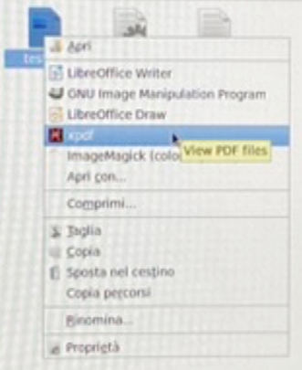

Appendice
Attenzione
Questa sezione è ancora in fase di revisione. Le informazioni qui contenute potrebbero non essere complete o aggiornate.
Appendice - Risoluzione problemi tecnici
Gli script di avvio e consegna delle prove sono stati verificati sulle postazioni di esame e dovrebbero funzionare correttamente. Tuttavia, in caso di problemi, è sempre possibile procedere manualmente (come del resto veniva fatto dagli studenti degli anni accademici precedenti).
Creazione manuale file di svogimento da template
Sia per la Parte 1 che per la Parte 2 dell'esame, [prima di aprire le tracce]{.underline} è necessario rinominare tutti i file che nel nome contengono il segnaposto 'MATRICOLA', che va sostituito con il proprio numero di matricola.
È importante accertarsi che il numero di matricola nel nome del file sia corretto e che non siano stati inavvertitamente modificati i caratteri precedenti e seguenti ("_" e ".").
Sia per la Parte 1 che per la Parte 2 dell'esame, [prima di aprire le tracce]{.underline} è necessario rinominare tutti i file che nel nome contengono il segnaposto 'MATRICOLA', che va sostituito con il proprio numero di matricola.
È importante accertarsi che il numero di matricola nel nome del file sia
corretto e che non siano stati inavvertitamente modificati i caratteri
precedenti e seguenti (_ e .).
Malfunzionamento dello script avvia-problemi.sh
La procedura riportate di seguito è necessaria solo in caso di malfunzionamento dello script di avvio. In condizioni normali, è sufficiente eseguire lo script avvia-problemi.sh presente nella cartella MAADB_Part1.
1. Avvio Matlab
L'applicazione può essere lanciata utilizzando menu delle applicazioni del sistema operativo, sottomenu "Programmazione".

2. Impostazione della cartella di lavoro
Una volta lanciato il Matlab, è necessario
cambiare la cartella di lavoro in modo che nel file browser integrato
sia visualizzato il contenuto della cartella MAADB_Part1 presente nella
cartella esame sul desktop.
Per spostarsi nella cartella MAADB_Part1 è possibile navigare tra le
cartelle del sistema operativo tramite il file browser di Matlab.
Il percorso completo della cartella è /home/studente/Scrivania/esame/MAADB_Part1.

Attenzione
Un errore comune è spostarsi nella cartella Esame e da qui
utilizzare il file browser per visualizzare il contenuto della sottocartella
MAADB_Part1. In questo caso, Matlab non sarà in grado di eseguire gli script
dell'esame perché non sono nella cartella corrente.
Percorso di rete equivalente
E' normale che nella barra di navigazione il
percorso visualizzato sia /media/sf_esame/MAADB_Part1. Infatti, il percorso
/home/studente/Scrivania/esame/MAADB_Part1 è un collegamento simbolico al percorso
/media/sf_esame/MAADB_Part1.
procedure alternative
Per impostare la cartella di lavoro di Matlab, è anche possibile:
- utilizzare nella Command Window il comando cd /media/sf_esame/MAADB_Part1
- incollare nella barra di navigazione il percorso della cartella.
3. Configurazione del toolbox di verifica formale
Per configurare il toolbox di verifica formale, è necessario eseguire il
comando startup_exam nella command window di Matlab, seguito dal tasto INVIO.
(In alternativa, è possibile aprire il file startup_exam.m nell'editor senza modificarlo e cliccare sull'icona 'Run').
Al termine dell'esecuzione, verrà aperto automaticamente il live script di verifica formale
check_exam.mlx, che consente di verificare lo stato di avanzamento dello svolgimento e di
eseguire le verifiche formali sui file e sulle variabili.
Malfunzionamento dello script avvia-rchiusa.sh e/o avvia-raperta.sh
In caso di malfunzionamento dello script avvia-rchiusa.sh e/o avvia-raperta.sh, è possibile procedere manualmente come segue:
- Aprire il file
MAADB_2024-09_rchiusa_MATRICOLA.txte/oMAADB_2024-09_raperta_MATRICOLA.txtnell'editor di testo Geany. - Rinominare il file sostituendo 'MATRICOLA' con il proprio numero di matricola.
- Aprire il file
domande-rchiusa.pdfe/odomande-raperta.pdfcon l'applicazione xPDF. - Aprire il file
MAADB_2024-09_rchiusa_MATRICOLA.txte/oMAADB_2024-09_raperta_MATRICOLA.txtnell'editor Geany. - Modificare il file di testo in modo da rispondere alle domande, seguendo le istruzioni contenute nel file PDF.
Malfunzionamento degli scritpt di consegna
In caso di malfunzionamento dello script consegna-problemi.sh, consegna-rchiusa.sh e/o consegna-raperta.sh,
non è necessario eseguire alcuna operazione manuale. Gli svolgimenti dei problemi in Matlab e delle risposte ai quesiti a risposta chiusa e aperta saranno comunque consegnati automaticamente al termine dell'esame, quando il docente procederà al ritiro degli elaborati.
Non sarà però disponibile allo studente la visualizzazione nel browser degli svolgimenti consegnati.
E' necessario comunque avvisare i docenti del malfunzionamento, in modo che sappiano di non poter utilizzare alcune delle funzioni connesse alla verifica della consegna degli svolgimenti.
Come aprire manualmente i file pdf

Purtroppo, sulla postazione di esame l'applicazione di default per I file pdf è Libre Office, che [non restituisce una visualizzazione corretta]{.underline} del file. È quindi importante non aprire i file pdf mediante un doppio click. È invece necessario utilizzare l'applicazione xPDF.
A questo fine, eseguire un click-destro sul file pdf e selezionare xPDF dal menu contestuale.

Se questo file è erroneamente aperto nell'applicazione Libre Office, chiudere l'applicazione e riaprire il file con l'applicazione xPdf.
Come aprire manualmente i file txt
Da completare
Questa sezione deve ancora essere completata. Aggiungere le istruzioni mancanti qui. | |
Struttura della cartella 'esame'
La cartella 'esame' contiene i file necessari per lo svolgimento della prova. La struttura della cartella alla chiusura dell'esame è la seguente:
esame/
├── istruzioni.pdf
├── MAADB_cheat_sheet_<versione>.pdf
├── tavole_z_t_chi2_F.pdf
├── start-exam.sh (*)
├── student_<lastname>.<matricola> (1)
├── MAADB_Part1/
│ ├── 1-avvia-problemi.sh
│ ├── 2-consegna-problemi.sh
│ ├── startup.m (*)
│ ├── matfiles/
│ │ ├── <problem-data>.mat
│ │ ├── <problem-data>.mat
│ │ └── ...
│ ├── problema1_<matricola>.m (2)
│ ├── ... (2)
│ ├── problema<n>_<matricola>.m (2)
│ └── submitted/ (3)
│ ├── presubmission_checks_<matricola>_<timestamp>.html
│ ├── problema1_<matricola>_<timestamp>.html
│ ├── ...
│ └── problema<n>_<matricola>_<timestamp>.html
└── MAADB_Part2/
├── 1-avvia-rchiusa.sh
├── 2-consegna-rchiusa.sh
├── 3-avvia-raperta.sh
├── 4-consegna-raperta.sh
├── domande-rchiusa.pdf
├── domande-raperta.pdf
├── rchiusa_<matricola>.txt (4)
├── raperta_<matricola>.txt (6)
└── submitted/
├── rchiusa_<matricola>.txt (5)
└── raperta_<matricola>.txt (7)
(1) Creato dopo l'identificazione dello studente
(2) Creato dallo script `avvia-problemi.sh` a partire dai template problema*_MATRICOLA.m
(3) Cartella e contenuto creati dallo script `consegna-problemi.sh` dopo la consegna
(4) Creato dallo script `avvia-rchiusa.sh` a partire dal template rchiusa_MATRICOLA.txt
(5) Creato dallo script `consegna-rchiusa.sh` dopo la consegna
(6) Creato dallo script `avvia-raperta.sh` a partire dal template raperta_MATRICOLA.txt
(7) Creato dallo script `consegna-raperta.sh` dopo la consegna
(*) Di norma questi file possono essere ignorato. Vengono utilizzati in caso di
malfunzionamento delle procedure usuali.